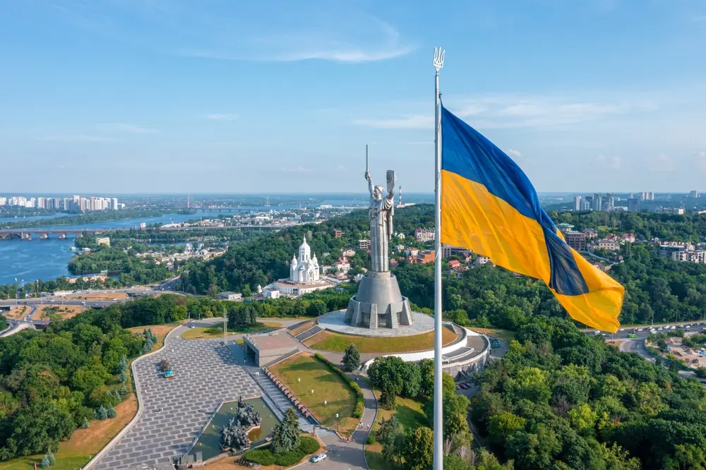

Україна – країна краси, історії та можливостей
Географічне розташування та природа
-
Україна – це найбільша країна Європи, розташована у
її
східній частині. Вона має вихід до Чорного та
Азовського
морів, межує з сімома країнами: Польщею,
Словаччиною,
Угорщиною, Румунією, Молдовою, білоруссю та росією.
- Природні зони Україна поділена на кілька природних зон: Полісся – лісиста північ із численними річками та болотами. Лісостеп – перехідна зона між Поліссям та степами, багата на родючі ґрунти. Степ – південна частина країни з рівнинами та чорноземами. Карпати та Кримські гори – мальовничі гірські райони.
Історія України
- Україна має багатовікову історію, яка охоплює
періоди Київської Русі, Козацької доби, перебування
у складі різних імперій та здобуття незалежності.
- Важливі історичні періоди
- Тут повинен бути ще текст.
- Київська Русь (IX–XIII ст.) – могутня середньовічна держава з центром у Києві.
- Козацька доба (XVI–XVIII ст.) – боротьба за незалежність під проводом Богдана Хмельницького.
- Українська Народна Республіка (1917–1921) – спроба створення незалежної держави.
- Незалежність (1991) – проголошення суверенітету після розпаду СРСР.
- 8 жовтня 1991 року Верховна Рада прийняла закон про громадянство, 14 листопада — про державний кордон. На всеукраїнському референдумі 1 грудня 1991 року незалежність підтримали 90,3 % населення, одночасно першим президентом держави було обрано Леоніда Кравчука, «партія влади» залишилась при владі. Вже 2 грудня незалежну Україну визнали Канада та Польща, а за наступні 2 місяці ще 90 держав.
- 24 серпня 1991 року була прийнята постанова «Про військові формування на Україні», а 6 грудня прийнято закон «Про Збройні Сили України», згідно з яким до нової присяги було приведено перших військових. Ця подія відзначається як день Збройних сил України.
- 8 грудня у Біловезькій пущі лідери Білорусі, Росії та України підписали угоду про припинення існування СРСР та утворення нового об'єднання — Співдружності Незалежних Держав (СНД). 25 січня 1992 року Михайло Горбачов склав повноваження першого й останнього президента СРСР.
Культура та традиції
- Українська культура багата на народні звичаї, пісні,
вишивку, гастрономію та свята.
- Традиційні українські страви Борщ – червоний буряковий суп із м’ясом і овочами. Вареники – тісто з різними начинками (картопля, сир, вишні). Сало – національний продукт, який вживається із хлібом та часником.
- Важливі свята Різдво (25 грудня) – святкується традиційними колядками та кутею. Великдень – фарбування писанок та освячення паски. День Незалежності (24 серпня) – головне державне свято країни.
Сучасна Україна
- Сьогодні Україна розвивається як незалежна держава,
активно реформує економіку, освіту та армію,
бореться за свою територіальну цілісність та
європейське майбутнє.
- Київ – столиця та найбільше місто. Львів – культурний центр із європейською атмосферою. Одеса – портове місто з виходом до Чорного моря. Харків – науковий і студентський центр.
Висновок
Україна – це країна з унікальною історією, прекрасною природою, багатими традиціями та великим потенціалом. Вона має все необхідне для розвитку та процвітання, а її народ – сильний, волелюбний і гостинний.
Якщо не можеш коротко розповісти про історію України, значит не знаєшь її. А якщо зумієш охопити поглядом всю історію - від скіфів до сьогодення, - відчуваєш себе частиною цієї землі, цього народу. Вчися пишатися своїми предками, і нащадки пишатимуться тобою. Бо ж українець - не тільки той, чиї діти були українцями, а той, чиї діти будуть українцями.